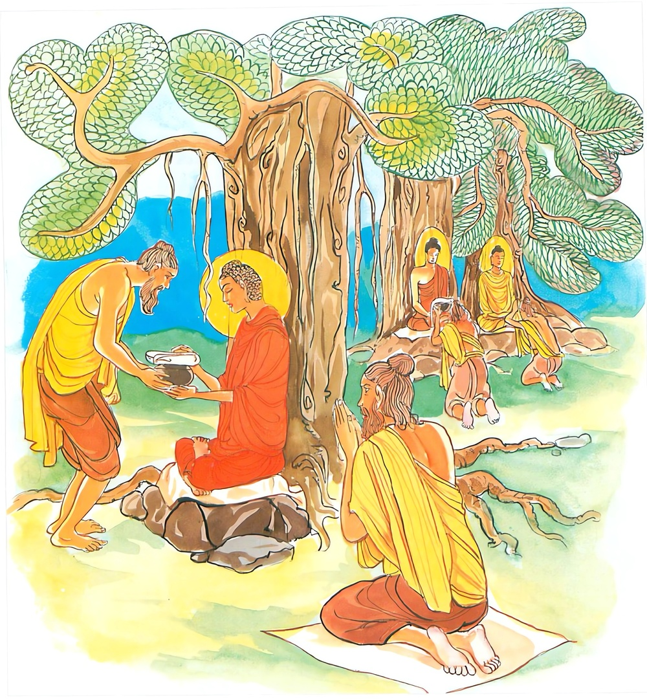
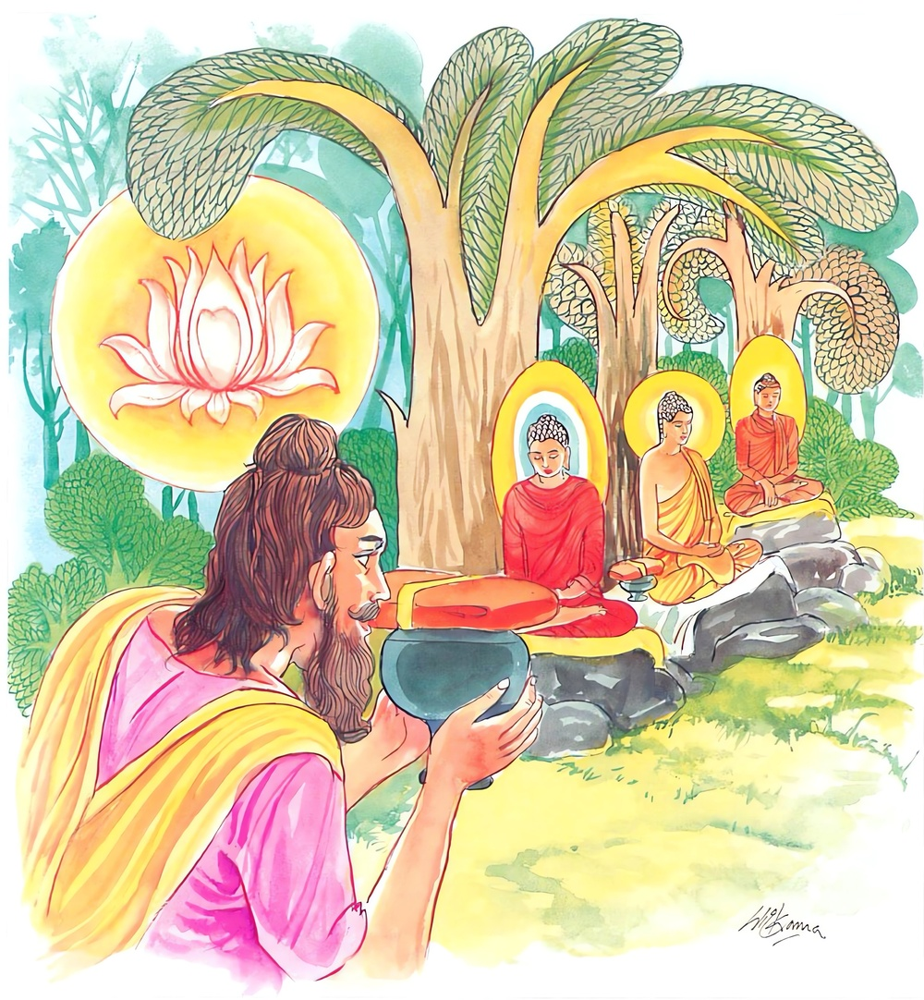

14-9 කාශ්යප බුදුරජාණන් වහන්සේගේ රන්චේතිය පිළිබඳ කථා පුවත
මෙම කතාව සද්ධර්ම සාගරයෙන් ද කියවන්න.
පූජාරහෙ පූජයතො බුද්ධෙ යදි ව සාවකෙ
පපඤ්චසමතික්කන්තෙ තිණ්ණසොකපරිද්දවෙ.
(ආමිස ප්රතිපත්ති දෙකින්) පිදීමට සුදුසු වූ, (තෘෂ්ණා දෘෂ්ටි මාන යන තුන්) ප්රපංචයන් මොනොවට ඉක්මියා වූ, ඉක්ම ගිය ශෝක පරිද්රව ඇති (හෙවත් ශෝකපරිද්රව දුඃඛයෙන් එතෙර ට ගියා වූ) බුදු පසේබුදුන් ද නොහොත් බුදුසව්වන් ද වන්දනමානනාදියෙන් සිවු පසයෙනුත් යමෙක් පුදා ද,

තෙ තාදිසෙ පූජයතො නිබ්බුතෙ අකුතොභයෙ
න සක්කා පුඤ්ඤං සඞ්ඛාතුං ඉමෙත්තමපි කෙනචි.
රාගාදි කෙලෙස්ගිනි නිවීමෙන් නිවුනු සිත් ඇති, කිසි බියෙකින් වත් අරමුණෙකින් වත් උවදුරක් නැත්තා වූ, එ බඳු (හෙවත් මෙකී ගුණෙන් යුත්) ඒ බුදු පසේබුදු සව්වන් (දිවමන් කල්හි ද පිරිනිවි කල්හි ද) පුදන්නහුගේ පින්කම් මේ මෙතෙකැ යි ගණින්නට කිසි පුද්ගලයකු විසිනුදු නො පිළිවනි.

"පුජාරදහෙති" යන මේ ධර්ම දේශනය ශාස්තෲන් වහන්සේ චාරිකාවේ යෙදෙමින් කාශ්යප දසබලයන් වහන්සේගේ රන්වන් සෑයක් නිමිති කරගෙන දේශනා කළහ. තථාගතයන් වහන්සේ සැවැත් නුවරින් නික්මී පිළිවෙළින් බරණැසට වඩින්නේ අතරමග තෝදෙය්ය ගම සමීපයේ පිහිටි එක්තරා දේවස්ථානයකට මහාසංඝයා පිරිවරාගෙන වැඩම කළහ. එහි තථාගතයන් වහන්සේ වාඩි වී ආනන්ද තෙරුන් යවා නොදුරේ ගොවිතැනේ යෙදී සිටි බමුණෙක් කැඳ වුහ.
එම බමුණා පැමිණ බුදුන්ට නොවැඳම ඒ දේවස්ථානයට වැඳ සිටියේය. සුගතයන් වහන්සේද? බ්රාහ්මණය මේ ප්රදේශය කවර ස්ථානයක් ලෙස සිතන්නේදැයි විමසුහ. අපගේ ප්රවේණියෙන් පවතින චෛත්ය ස්ථානයකි එනිසා වඳිමියි පැවසීය. මේ ස්ථානය ඔබ වැඳීමෙන් යහපතක් කරන ලැදැයි බ්රාහ්මණයා පසසා සතුටු කළේය. මේ කරුණ අසා භික්ෂූන් වහන්සේලා කිනම් කරුණක් නිසා බුදුහු ප්රසාදයට පත්කළේදැයි සැකයක් ඇතිකර ගත්හ. අනතුරුව තථාගතයන් වහන්සේ උන්වහන්සේලාගේ සැකය දුරු කරණු සඳහා මජ්ඣිම නිකායේ සඳහන්වන ඝටීකාර සුත්රය දේශනා කර ඍධි බලයෙන් කාශ්යප බුදුන්ගේ යොදුනක් උස් වු රන් චේතිය හා අනෙක් චෛත්යයක් අහසේ මවා මහ ජනයාට දක්වා බ්රාහ්මණය මෙබඳුවු ථූපාර්හ පුද්ගලයන්ට පුජා කිරීම යුතුකමකැයි පවසා මහා පරිනිබ්බාන සුත්රයේ සඳහන් වන පරිදි බුද්ධාදීන්ට සතර ස්තූප කිරිමට සුදුසු ථූපාර්හ පුද්ගලයන් සිව්දෙනා පවසා - ශාරීරික චෛත්ය උද්දෙසික චෛත්යය පාරිභෝගික චෛත්යය විශේෂයෙන් විස්තර කර දී මේ ගාථාව පැවසුහ.
පිදුමට සුදුසු අරහාදි ගුණෙන් යුතු
බුදුවරු රහත්වරු නිතරම වැඳිය යුතු
තුන් බුදුවරුන් වැඳුමෙන් යම් දිනක මතු
දුක් ගීනි නිවී සුව අත්වෙයි සසර පැතු
උපදිති කුසල් තුන් බුදුවරු නැමදීමෙන්
සැප දෙයි සසර දුක් කරදර නිම වීමෙන්
එහි පූජාකිරීමට සුදුසු පූජා කිරීමට යුතු යන අයයි. පුජාරහෙ පුජයතො - වැඳිම් ආදී ද සිවුපසයෙන් ද පූජා කරන්නහුට පූජා කිරීමට යෝග්යවුවෝ බුදුන් ආදීන් දක්වයි. බුද්ධොති - සම්මා සම්බුදුන් වහන්සේ යදිති - යදිවා නැතහොත් යන අර්ථයි. එහි පසේ බුදුන් යනු කියන ලද. සාවකෙච පපඤ්ච සමතික්කනෙති - ඉක්ම වූ තෘෂ්ණා දිට්ඨිමාන ප්රපංචයන් තරණය කළ තිණ්ණසෝකපරිද්දවේ ශෝක වැළපිම් පරිදාවයන් මේ දෙකම ඉක්මවා සිටි යන අරුත ගෙනදෙයි. මෙයින් පුජාවට සුදුසු බව දක්වන ලදී. තෙති - බුද්ධාදීය තාදිස යන කී දේ ගැනීම් වශයෙනි. නිබ්බුතෙ - රාගාදි නිවීමයි නත්ථි නැත භව වශයෙන් හෝ රාගාදී වශයෙන් නැත. ඒ නිසා අකුතොභය නම් වන සක්කා පුඤ්ඤ සඞ්ඛාතුං - පින් ගැනීමට නොහැකිය. ඉමෙත්තමපි
කෙනචී - අපි ශබ්දය මෙහි සබඳ කළයුතු කිසියම් පුද්ගලයකු විසින් මානයෙන් හෝ එහි පුද්ගලයා විසින් ඒ බ්රහ්මයා ආදින් විසින් කියා ගැනේ. මානෙන යනු ත්රිවිධ මානයෙන් තීරන ධාරණ - පුරණ මෙය මෙපමණ යයි න්යාය වශයෙන් තිරණය වේ. ධාරණ යනු තරාදියෙන් දැරීමයි. පිරීම නම් අඩක් පිරුණු සැලියක් සේ පිරිමයි. කිසියම් පුද්ගලයෙක් විසින් මේ තුන් මානයෙන් බුද්ධාදි උතුමන් පුදන්නේ පිං විපාක වශයෙන් ගැනීමට නොහැකිය. පරියන්ත රහිත නම් ස්ථාන දෙකකදී පුජා කරන්නේ. පළමුව දානය යොදන්නේ කුමක් හෙයින්ද? බුදුන් වැඩ සිටියදී බුදුන් පුදන්නේ පිං රැස් කිරීම කළ නොහැකිය. නැවත කෙලෙස් පරිනිර්වාණයේ දී නිමිති වුව ද ස්බන්ධ පරිනිර්වාණයෙන් නිවුන විටද (පිරිනිවන් පෑමට පසුවද) දැරීම භේදය යෙදේ මේ නිසා විමානවත්ථුප්පකරණයේ - මෙලෙසම සඳහන් වෙයි.
"තිට්ඨතෙත නිබ්බුත චාපි - බුදුරජාණන් වහන්සේ වැඩ සිටියදී ද පිරිනිවන් පෑ විටද සම සිතට සමඵල ඇතිවේ. සිතේ ප්රසාදය නිසා පින්කරන පුද්ගලයෝ සුගතියට යති.
දේශනාවසානයේ ඒ බ්රහ්මණයා සෝවාන් ඵලයට පත්විය. යොදුනක් උස රන් චේතිය දින හතක්ම අහසේ සිටියේය. මහත් සමාගමයක් එක් රැස් වීමක් සිදුවිය. සත් දිනක් නොයෙක් ආකාරයෙන් පුජා කළහ. විවිධ ආගමිකයිගේ ලබ්ධි බිඳීමක්ද සිදුවිය. බුද්ධානුභාවයෙන් එම චෛත්යය සිද්ධස්ථානයේම රැඳුනි එහිම එකෙනෙහි මහත් ශෛලමය චෛත්යයක් ඇතිවිය. එම මහජන රැස්වීමේදී අසුහතර දහසක් ප්රාණීන්ට ධර්මාවබෝධය සිදුවිය.